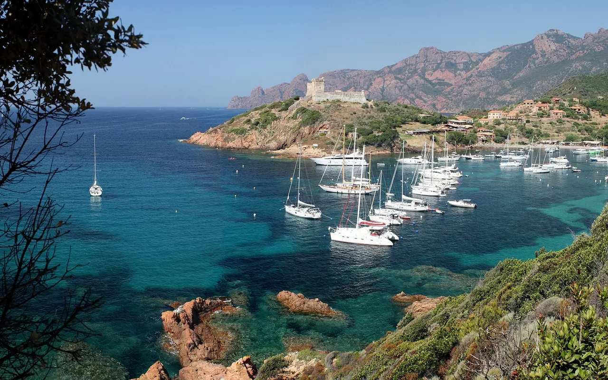

Trois criques depuis le ponton
La carte est remise au départ. Aujourd'hui :
25min
La crique aux pins
Une plage de galets à l'ombre des pins, à portée de pagaie. L'eau y est la plus claire le matin.
En kayak · 5 min en bateau
50min
La Parata
Le promontoire de granit et sa tour génoise. On mouille au pied, on monte à pied en dix minutes.
En kayak · 12 min en bateau
30min
Les Sanguinaires
Quatre îles rouges au bout du golfe, et le phare. On y va en semi-rigide, au calme du matin.
En semi-rigide

Une journée au ponton
Le matin pour le calme et l'eau claire, la fin d'après-midi pour la lumière.
- 8 h 30Vérification de la flotte, pleins faits
- 9 hPremiers départs, mer la plus calme
- 11 hLes kayaks arrivent à la crique aux pins
- 14 hLe vent se lève, on reste dans la baie si besoin
- 17 h 30Départ « coucher de soleil » en bateau
- 19 hDerniers retours, rinçage, on range
La mer est plus calme le matin. Le ponton ouvre à 9 h.